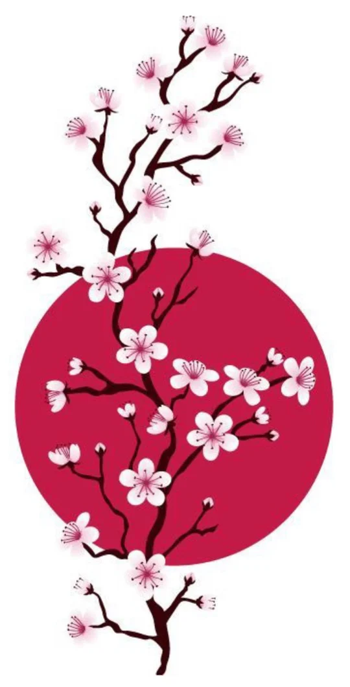

Terapeuta shiatsu en Majadahonda
shiatsu
Raquel Heras
Presión, calma y equilibrio
Sesiones de shiatsu para bajar el ritmo y soltar la tensión que llevas encima.

Qué es
Un masaje japonés que escucha
El shiatsu nace en Japón a partir de la medicina tradicional oriental. Trabaja sobre los meridianos, los caminos por los que circula la energía vital, el ki, presionando puntos concretos para devolver al cuerpo su equilibrio.
Se recibe vestido, tumbado sobre un futón, y cada sesión se adapta a cómo llegas ese día.
Beneficios
- Reduce el estrés
- Mejora la circulación
- Ayuda a la recuperación
- Proporciona bienestar
- Devuelve el equilibrio
- Renueva tu energía
Mapa del cuerpo
¿Dónde notas la tensión?
Toca una zona del cuerpo y te cuento cómo la trabajamos en una sesión.
Elige una zona para empezar.
Cómo es una sesión
-
Paso uno
Hablamos
Me cuentas cómo estás, qué te molesta y qué buscas. Así adapto la sesión a ti.
-
Paso dos
Te tumbas con tu ropa
Sobre un futón, con ropa cómoda. Sin aceites ni cremas.
-
Paso tres
Presión y estiramientos
Recorro los meridianos con los dedos, las palmas y los codos, siempre a tu ritmo.
-
Paso cuatro
Descansas
Unos minutos de calma al final y, si quieres, algún consejo para llevarte a casa.
Preguntas frecuentes
¿Duele?
No debería. La presión se ajusta a ti. Algunas zonas pueden estar más sensibles; basta con decírmelo y lo cambio.
¿Qué ropa llevo?
Ropa cómoda y holgada, por ejemplo un pantalón de chándal o unas mallas con una camiseta de algodón. El shiatsu se recibe vestido.
¿Cuánto dura y cuánto cuesta?
Escríbeme por WhatsApp o llámame y te cuento la duración, el precio y los huecos que tengo libres.
¿Hay casos en los que no conviene?
Si estás embarazada, tienes fiebre, una lesión reciente o una enfermedad en tratamiento, coméntamelo antes de la sesión. El shiatsu acompaña, pero no sustituye a tu médico.
Pide tu cita
Reserva tu sesión
Rellena lo que quieras y se abrirá WhatsApp con tu mensaje ya escrito. Solo tienes que enviarlo.
- Móvil
- +34 696 663 229
- Correo
- tushiatsu@gmail.com
- Dónde
- Majadahonda, Madrid